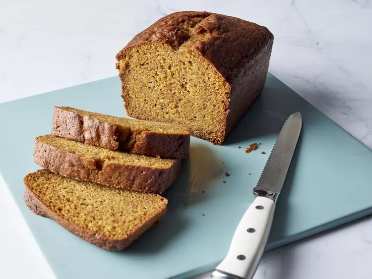

Copycat Starbucks Pumpkin Bread

This homemade Starbucks pumpkin bread is delicious. A thick slice of this moist bread is the perfect companion for your morning cup of joe! This recipe makes enough batter to fill a medium loaf pan. Slice the loaf into eight thick slices of goodness that perfectly mimic the weight, color, and flavor of the real thing!
Ingredients:
- 1 ½ cups all-purpose flour
- 1 teaspoon baking soda
- 1 teaspoon ground nutmeg
- 1 teaspoon ground cinnamon
- 1 teaspoon ground cloves
- ½ teaspoon baking powder
- ½ teaspoon salt
- 4 large eggs
- 1 cup white sugar
- ¼ cup light brown sugar
- ½ teaspoon vanilla extract
- ¾ cup canned pumpkin
- ¾ cup vegetable oil
Steps:
- Gather the ingredients. Preheat the oven to 350 degrees F (175 degrees C). Grease an 8½ x 4½-inch loaf pan.
- Combine flour, baking soda, nutmeg, cinnamon, cloves, baking powder, and salt in a large bowl; mix well and set aside. Beat eggs, white sugar, brown sugar, and vanilla extract in a large bowl with an electric mixer on high speed until combined, about 30 seconds. Beat in pumpkin and oil. Add flour mixture; mix until batter is blended and smooth.
- Pour batter into the prepared loaf pan.
- Bake in the preheated oven until the top is dark brown and a toothpick inserted into the center of the bread comes out clean, about 70 minutes.
- Let bread cool in the pan for about 30 minutes, then invert onto a wire rack to cool completely. Cut into 1-inch-thick slices.